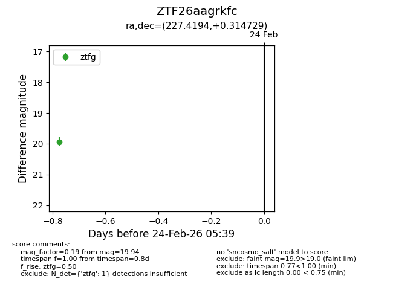
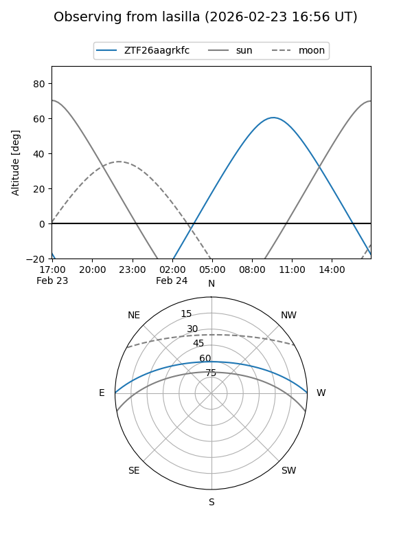
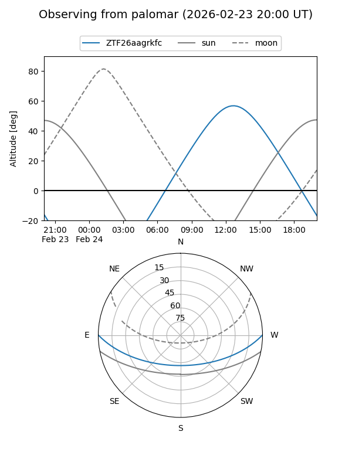

ZTF26aagrkfc
Target ZTF26aagrkfc at 2026-02-24 09:08
Aliases and brokers:
FINK: link
Lasair: link
ALeRCE: link
alt names
ZTF26aagrkfc (ztf,fink_ztf)
Coordinates:
equatorial (ra, dec) = 227.4194,+0.31473
equatorial (HMS+DMS) = 15:09:40.66,+00:18:53.02
galactic (l, b) = (359.7730,+47.34342)
Flags:
Photometry:
last ztfg=19.94
1 ztfg detections
Lightcurve

Visibility


Additional plots